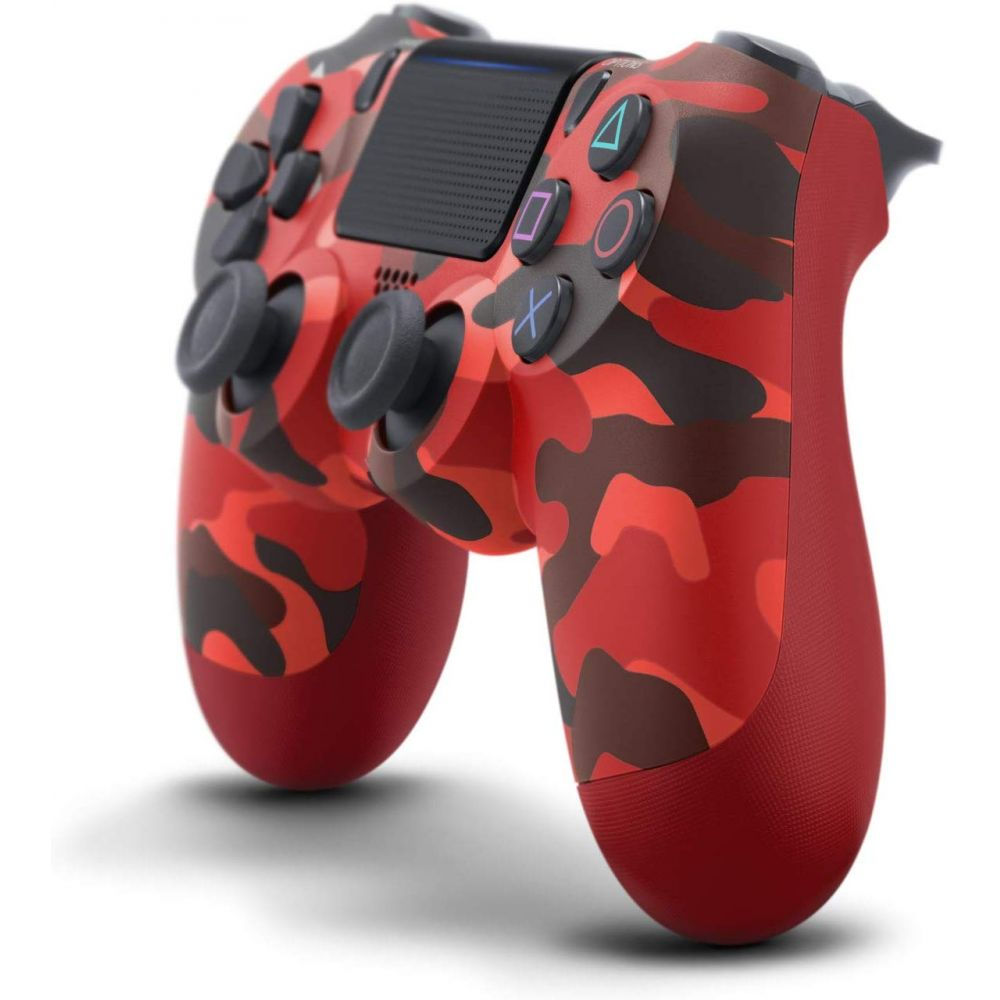

joystick
Joystick Playstation 4
ps4
500us$ 
description
details
comments
El DualShock (originalmente Dual Shock; registrado como DUALSHOCK o DUAL SHOCK) es una línea de mando de videojuegos con feedback de vibración y controles analógicos desarrollados por Sony Interactive Entertainment para la familia de sistemas PlayStation.
BUY
ADD TO CART